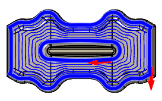

<div id="morphMode"><p>選択したチェーンを同期する方法。</p>
<table class="tipTable" cellspacing="10">
<tr>
<td><center></center></td>
</tr><tr>
<td><center><p><b>単純</b><br>
選択した各チェーンのセグメント数が等しい場合に最適です。</p></center></td>
</tr></table>
<br>
<table class="tipTable" cellspacing="10">
<tr>
<td><center></center></td>
</tr><tr>
<td><center><p><b>最短</b><br>
選択したチェーン間の最短距離を検出します。</p></center></td>
</tr></table>
</div>